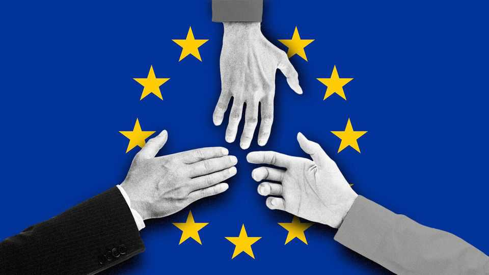

Meet the committee to buy Europe
The continent’s dealmakers deserve much more attention
July 16th 2026

Europe wants bigger firms. Its apparatchiks say so every time they talk about integration and competitiveness. “The leaders want true European champions,” announced António Costa, the Portuguese head of the European Council, in February. “We limited consolidation, constrained risk and postponed cross-border investments,” complained Mario Draghi, an Italian banker who wrote a door-stopper of a report on the topic, in a speech in May.
Ideally these “champions” would be born loyal to the European project: golden geese reared under Brussels’ proposed “EU Inc” incorporation rules. In practice they must be forged by mergers. Big pan-European deals require big pan-European dealmakers. Can the continent produce such figures? Can it stand them? Consider the recent fortunes of the three busiest: Andrea Orcel, an Italian investment banker, Xavier Niel, a French telecoms entrepreneur, and Daniel Kretinsky, a Czech corporate raider. Call them the committee to buy Europe.
Mr Orcel is the boss of UniCredit, Italy’s most outward-looking bank and its second-largest by assets. He made his name as a hard-charging adviser on big bank tie-ups in the 2000s. Now he is slowly consummating one of his own. In September 2024, when Mr Draghi’s report was released, UniCredit disclosed its initial stake in Commerzbank, a German lender. Since then Mr Orcel has been portrayed as an invader—by the top brass at Commerzbank (“not good form”); by two successive German chancellors (UniCredit is “destroying” trust, Friedrich Merz said in May); and by the German bankers’ union (“the potential for chaos is growing”).
Patience and a tolerance for pain, though, come naturally to the committee’s members. For all the drama, UniCredit now controls just under half of the voting rights in Commerzbank. That is not enough to merge the pair. But it is sufficient for Mr Orcel to declare tentative victory over the German financial establishment and turn an eye to the chaos consuming the Italian one. The main issue there is control over Monte dei Paschi di Siena (MPS), the world’s oldest bank, and Generali, an insurer in which MPS, UniCredit and a cast of Italy’s richest industrial families own shares. The Italian state is in the process of selling its stake in MPS, but keeps threatening to expropriate bank profits for good measure.
Mr Niel is that rarest of European creatures: an entrepreneur. He made a fortune selling internet access on the cheap, bringing greater competition to the continent’s telecoms industry. Now he is helping to consolidate it. In America there are eight telecoms companies with more than half a million customers. In Europe there are 40. The Americans wring about three times as much revenue out of each customer and lavish far more on new infrastructure (and their shareholders).
As well as operations in France and Italy, Mr Niel has big stakes in telcos in Sweden, Ireland and Ukraine, utilising a baroque corporate structure that would make a Brussels committee blush. In May he sold a position in the Belgian state-owned carrier. This month he acquired one in Vodafone, a British giant whose largest market is Germany.
As a pan-European collector of influence in a single sector, Mr Niel is bested only by Bernard Arnault, whose luxury conglomerate, LVMH, is gigantic but has not bought much of late (Mr Niel’s partner is Mr Arnault’s daughter). Last year Iliad, Mr Niel’s main operation, considered a tie-up with Telecom Italia, which has since returned to the warm embrace of the state (by selling itself to Italy’s postal service, naturally). In June his company was part of a consortium which agreed to buy, and then break up, SFR, the second biggest French operator. Committee members must step over the bodies of those who have come before. SFR is owned by Altice, the slowly imploding operation of the French dealmaker Patrick Drahi. Vodafone is so big in Germany because it made the largest hostile takeover in history there in 2000, right before the telecoms bubble burst.
Mr Kretinsky is harder to categorise than Mr Orcel or Mr Niel. He is neither hired gun nor entrepreneur, but operates more like a one-man hedge fund. In the 2010s he acquired unfashionable coal and power assets from those without the stomach to operate them. These days he is better known as Europe’s grocer. In 2024 he gained control of Casino, a French retailer, during a complicated debt restructuring. (Mr Niel, to whom Mr Kretinsky sold his stake in Le Monde, a French newspaper, in 2023 also made a bid.) Last year he bought Metro, a German store, and became the biggest shareholder in Sainsbury’s, a British one.
Mr Kretinsky’s tastes are extraordinarily eclectic. Until recently he held a 20% stake in Thyssenkrupp Steel, Germany’s largest producer. In November he acquired 4% of TotalEnergies, a French oil major, and he recently became the largest shareholder in West Ham, a football club that has just been relegated from England’s Premier League. That list may well be out of date by the time this column reaches readers of our print edition in Britain, owing to appalling delays at Royal Mail, which Mr Kretinsky also owns.
It is remarkable that the dealmaking trio are not better known. Their fortunes matter greatly to the old world. None is a saint acting out of public interest. Yet Europe needs its dealmakers. Mr Orcel’s struggles in Germany are a clear test of whether Europe wants to build a continental rather than a provincial financial system. Messrs Niel and Kretinsky are central to the future of European telecoms and energy, both of which are vital for its competitiveness. It is equally remarkable that, between them, the trio appear in seemingly every corporate saga on the continent. Perhaps that illustrates how dynamic they are. Or perhaps it reflects how small European business has become. ■
Subscribers to The Economist can sign up to our Opinion newsletter, which brings together the best of our leaders, columns, guest essays and reader correspondence.